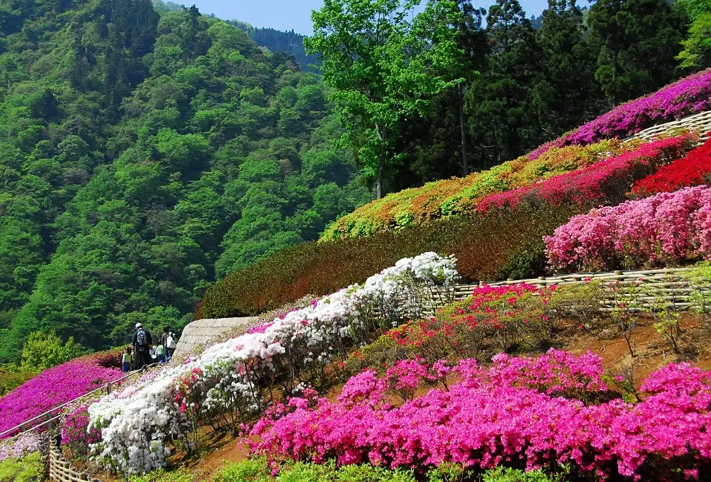
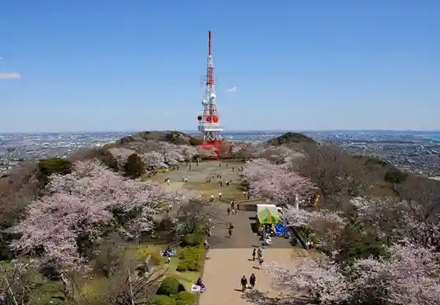
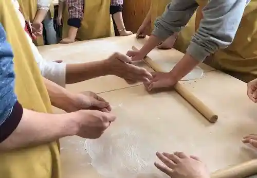
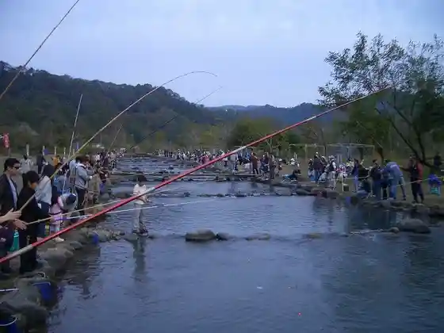

Japan / Kanagawa / Aikawa
Aikawa
Aikawa · Kanagawa
Aikawa
Highlighted on the Kanagawa map.

Sights
Miyagase Mizumi
Aikawa, Kanagawa · Official / source link
Hattori Ranch
Aikawa, Kanagawa · 046-281-0917 · Official / source link

Kanagawa Prefectural Aikawa Park
Aikawa, Kanagawa · 046-281-3646 · Official / source link
Aikawa Koen Kogei Kobo Village De no Nippon no Dentokogei Experience
Aikawa, Kanagawa · 046-281-2438 · Official / source link

Nakatsugawa Masu Tsuriba
Aikawa, Kanagawa · 046-281-3292 · Official / source link

Kafe
Aikawa, Kanagawa · 046-280-4233 · Official / source link
Reimbo Plaza (Aikawa Sen'i Hall)
Aikawa, Kanagawa · Official / source link
Sakamoto Seishonen Plaza
Aikawa, Kanagawa · 046-285-2111 · Official / source link
Kafe Tsubomi
Aikawa, Kanagawa · 046-281-7250 · Official / source link
Ko Minka Yama Ju Tei
Aikawa, Kanagawa · 046-285-2111 · Official / source link
Tamago Ka Ya
Aikawa, Kanagawa · 046-281-6475 · Official / source link
Yo Damari Farm HIDAMARI STRAWBERRY FARM
Aikawa, Kanagawa · Official / source link
Aikawa Sora Park
Aikawa, Kanagawa · 045-210-7294 · Official / source link